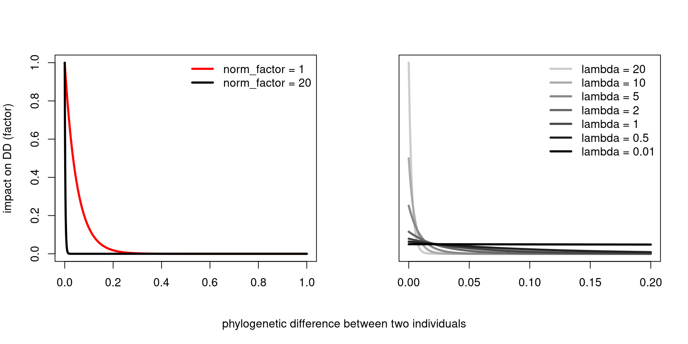
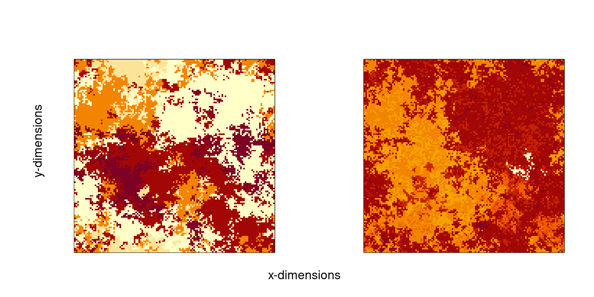
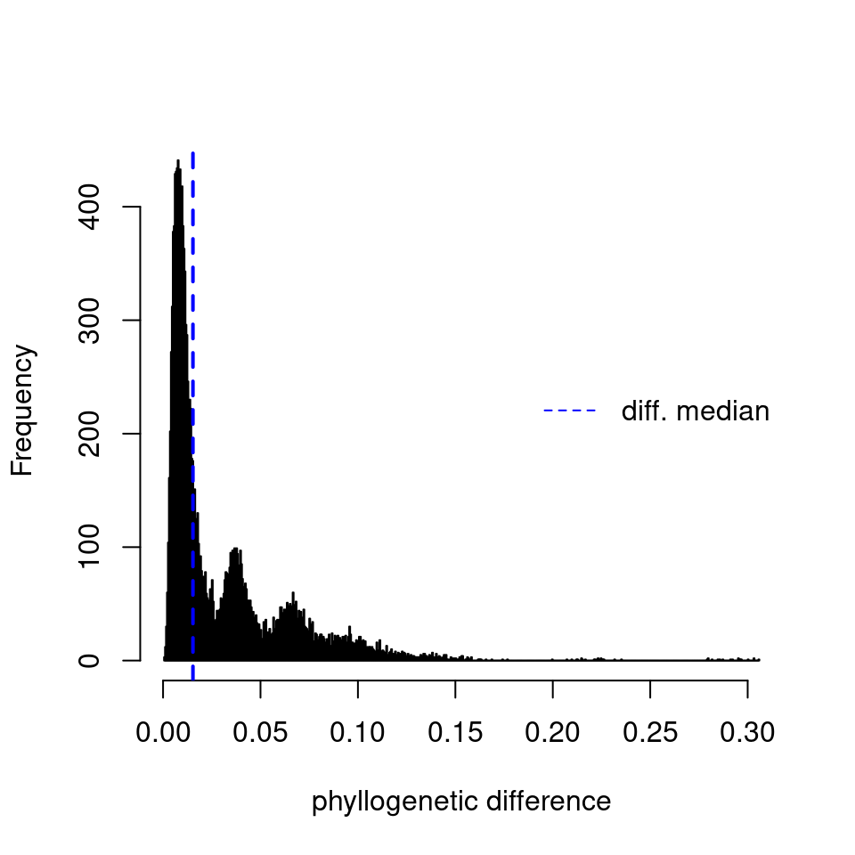
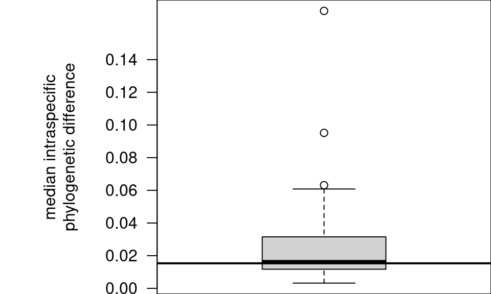
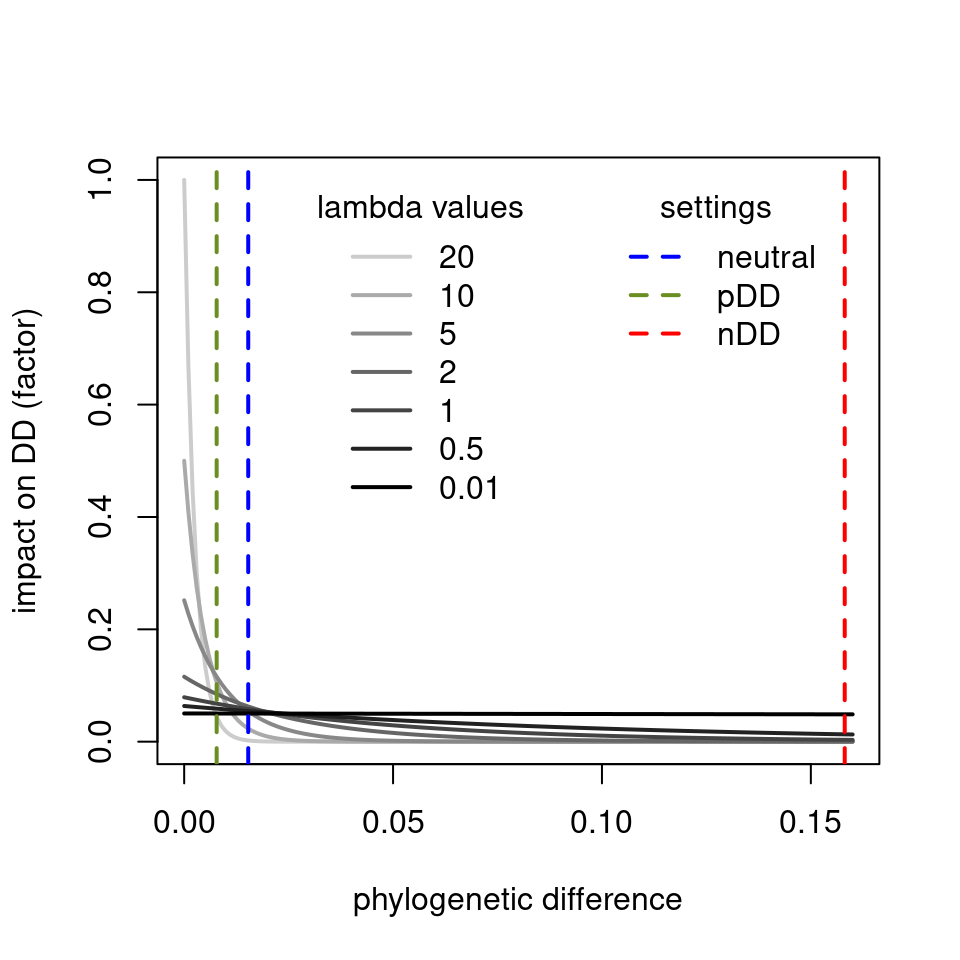
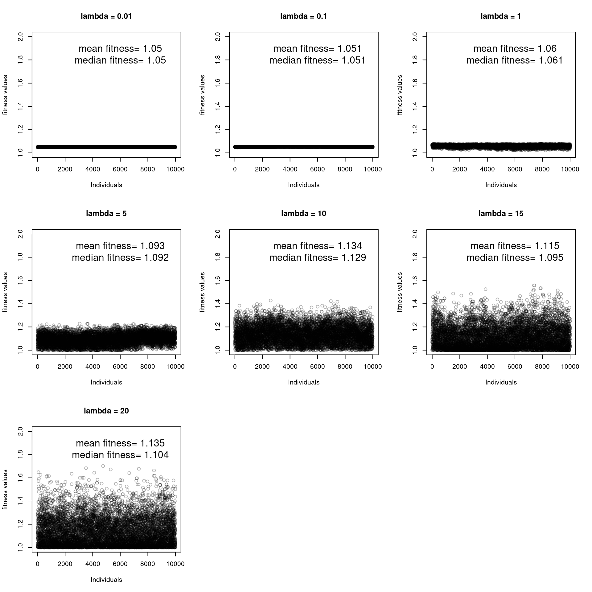
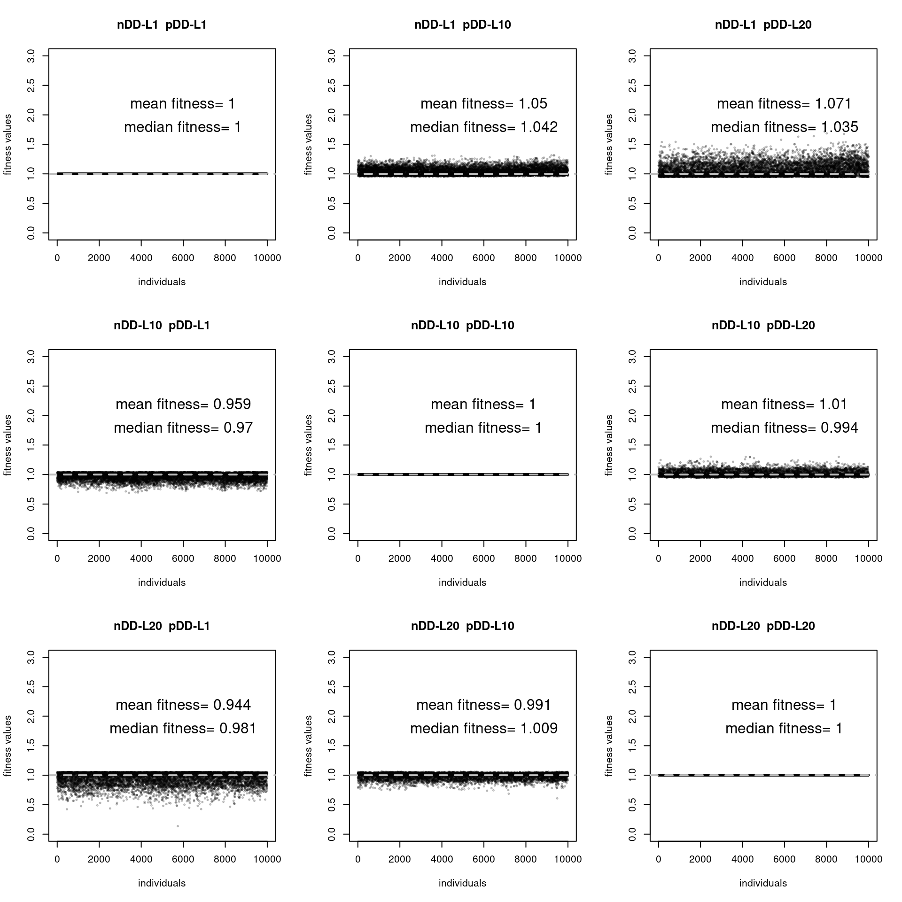

library(PhyloSim)
library(parallel)
library(dplyr)
library(tidyverse)
# root <- "~/Uni/Master/MA/" # work from local machine
root <- "~/cyber_synch/" # work from uni bayreuth serverImplementation and justification of specificity kernel
Abbreviations
[n,p]DD = [neagitve, positive] density dependence
To investigate my research question, I modified the local dispersal option of PhyloSim 0.3.1. Here, I shall present the changes and explain them.
In Schroeder et al. (2020), the high pathogen specificity and intermediate mutualist specificity towards their hosts led to higher stabilizing CDD for rare species, a phenomenon that has also been empirically observed. To demonstrate that this pattern can be reproduced with an uncoupled model too (hypothesis 1), I implemented a specificity term into PhyloSim, an uncoupled phenomenological mode with tree-tree interactions only.
The nDD with definable specificity kernel (parameter: densityCut) was already available in PhyloSim 0.3.1. However, the specificity kernel was fixed and linear. To answer my research question, I implemented an exponential specificity kernel that modulates the nDD based on the phylogenetic differences between two neighbors. I mirrored nDD to get pDD as well, but instead of decreasing fitness, pdd increases it.
In the c++ code the specificity parameter is called lambda, in lign with the exponential function. In the R parameter creator it is called [n,p]DDNicheWidth.
1 Presenting the exponential kernel at different lambda values
The exponential kernel enables control over how the phylogenetic differences between two neighbors alters the DD effect (see Figure 1). The norm_factor makes the curve steeper to adapt the function to the median/ mean phylogenetic differences (see Figure 1 left). The standardization term “1/20” bounds the effects on DD between 0 and 1, so that a simple multiplication does the job. However, this requires lambda to be >0 and <= 20. High lambda values imply greater specificity of the DD, meaning that close relatives (i.e., low phylogenetic differences) exert a stronger DD effect on the focal cell, while the DD effects of unrelated neighbors are marginal (see Figure 1 right). In contrast, with a low lambda value, all neighbors exert the same DD effect on the focal cell, regardless of their phylogeny.
The next chapter demonstrates, why the specificity kernel is suited for PhyloSim.
kernel <- function(x, lambda = 1, factor = 20) {
norm_factor <- lambda / (1 - exp(-lambda))
return((norm_factor * exp(-lambda * x * factor)) / 20)
}
par(mfrow = c(1,2),
oma = c(4, 0, 0, 0),
mar = c(2, 4, 4, 2))
# First plot - remove xlab since we'll add it globally
plot(kernel(seq(0,1,0.001), lambda = 20, factor = 1),
type = "l", lwd = 3,
x = seq(0,1,0.001),
xlab = "", # Remove individual xlab
ylab = "impact on DD (factor)",
col = "red")
lines(kernel(seq(0,1,0.001), lambda = 20, factor = 20),
x = seq(0,1,0.001),
col = "black", lwd = 3)
legend("topright",
c("norm_factor = 1", "norm_factor = 20"),
lty = 1, col = c("red", "black"),
bty = "n", lwd = 3)
# Second plot - remove xlab since we'll add it globally
lambda_values <- c(20, 10, 5, 2, 1, 0.5, 0.01)
x_vals <- seq(0, 0.2, 0.001)
plot(x_vals, rep(0, length(x_vals)),
type = "n",
xlab = "", # Remove individual xlab
ylab = "",
xlim = c(0, 0.2),
ylim = c(0, 1),
yaxt = "n")
grey_shades <- gray(seq(0.8, 0, length.out = length(lambda_values)))
for (i in 1:length(lambda_values)) {
lines(x_vals, kernel(x_vals, lambda = lambda_values[i], factor = 20),
col = grey_shades[i], lwd = 3)
}
legend("topright",
legend = paste("lambda =", lambda_values),
col = grey_shades,
lty = 1, lwd = 3,
bty = "n")
# Add the shared x-axis label using mtext
mtext("phylogenetic difference between two individuals",
side = 1,
outer = TRUE,
line = 2,
cex = 1)

1.1 Justification of the norm factor: why do I make the curves steeper?
short answer: To target the correct range of phylogenetic differences produced by PhyloSim.
Phylogenetic differences between two neighbors can range between 0 and 1. However, PhyloSim most of the times produces low differences (median), even interspecific. Therefore, I introduced the norm_factor, that steepens the exponential kernel, thus, targets smaller phylogenetic differences.The differences are encoded in the competitionMatrices that are returned after the simulatios. We can use this matrix, to asses mean and median differences between focal cell and neighbours within the defined radius. We’ll do so for a neutral scenario with a 128x128 landscape after 262501 runs (i.e., without density dependence or environment).
# load batch and extract null scenario
# runs <- readRDS(paste0(root, "local/runs/mstr/20250722/runs128DD.rds"))
# run <- runs$ndd0var0.01_pdd0var0.01
# or faster
runNeut <- readRDS(paste0(root, "local/summary/runNeut.rds"))
# name generation
names(runNeut$Output) <- runNeut$Model$runsDisplay the species distribution and the corresponding competition trait values.
par(mfrow = c(1,2),
oma = c(1, 1, 0, 0),
mar = c(2, 4, 4, 2))
image(runNeut$Output$`262501`$specMat, xaxt = "n", yaxt = "n")
image(runNeut$Output$`262501`$compMat, xaxt = "n", yaxt = "n") # phylogenetic differences are encoded here
mtext("x-dimensions",
side = 1,
outer = TRUE,
line = -1,
cex = 1)
mtext("y-dimensions",
side = 2,
outer = TRUE,
line = -2,
cex = 1)

Now, we use the competition matrix to get the phyllogenetic differences, as they are calculated in the c++ simulations. First we get total differences (interspecific + intraspecific) phyllogenetic differences, then intraspecific only.
# define function to extract the values (function only for simple von Neumann neighborhood)
getDif <- function(mat) {
# Get matrix dimensions
nrows <- nrow(mat)
ncols <- ncol(mat)
# Create shifted versions of the matrix for each neighbor direction
# We'll use NA padding to handle edges
# North neighbor (shift down)
north <- rbind(NA, mat[-nrows, , drop = FALSE])
# South neighbor (shift up)
south <- rbind(mat[-1, , drop = FALSE], NA)
# West neighbor (shift right)
west <- cbind(NA, mat[, -ncols, drop = FALSE])
# East neighbor (shift left)
east <- cbind(mat[, -1, drop = FALSE], NA)
# Calculate differences for each neighbor
diff_north <- mat - north
diff_south <- mat - south
diff_west <- mat - west
diff_east <- mat - east
# Stack all differences into a 3D array for easy calculation
# Each "slice" represents differences with one neighbor type
diff_array <- array(abs(c(diff_north, diff_south, diff_west, diff_east)),
dim = c(nrows, ncols, 4))
# Calculate mean difference (ignoring NA values at edges)
mean_diff <- apply(diff_array, c(1, 2), mean, na.rm = TRUE)
# Handle edge cases where all neighbors are NA (corners/edges)
# Replace NaN with NA for cleaner output
mean_diff[is.nan(mean_diff)] <- NA
return(mean_diff)
}Total Differences
Check the median phyllogenetic difference for a neutral run across all individuals.
dif <- getDif(runNeut$Output$`262501`$compMat)
q_tot <- quantile(dif) %>% t() %>% as.data.frame()
# cat("quantiles of phyllogenetic differences between all individuals:\n")
# print(q_tot)
hist(dif, breaks = 1000, main = "",
xlab = "phyllogenetic difference")
abline(v = q_tot$`50%`, lty = 2, col = "blue", lwd = 2)
legend("right", legend = "diff. median", lty = 2, col = "blue", bty = "n")

Intraspecific Differences
Check the median phyllogenetic difference for a neutral run within one species.
par(mgp = c(4, 1, 0), mar = c(0,8,0,0))
# Get species and calculate differences for all species
spec = unique(as.vector(runNeut$Output$`262501`$specMat))
q_intra <- sapply(spec, function(s) {
idx <- runNeut$Output$`262501`$specMat == s
quantile(dif[idx])
})
q_intra <- t(q_intra) %>% as.data.frame()
# Create the boxplot
boxplot(q_intra$`50%`, main = "",
xaxt = "n", yaxt = "n", ylab = "median intraspecific\nphylogenetic difference")
axis(at = seq(0, 0.15, 0.02), side = 2, las = 1)
abline(h = q_tot$`50%`, lty = 1, col = "black", lwd = 2)

We see that that most differences are narrow. For total individuals (see Figure 3), as well as within the same species (see Figure 4). By increasing the steepness of the exponential kernel, I target these value ranges. Doing so, the specificity parameter has an effect on the DD effect. We can add the median values to kernel plot to show how they coincide.
# show that in ndd sceanrio differences are much different then nDD
# runPDD <- runs$ndd0var0.01_pdd1var0.01
runPDD <- readRDS(paste0(root, "local/summary/runPDD.rds"))
names(runPDD$Output) <- runPDD$Model$runs
# runNDD <- runs$ndd1var0.01_pdd0var0.01
runNDD <- readRDS(paste0(root, "local/summary/runNDD.rds"))
names(runNDD$Output) <- runNDD$Model$runs
difPDD <- getDif(runPDD$Output$`262501`$compMat)
q_PDD <- quantile(difPDD) %>% t() %>% as.data.frame()
difNDD <- getDif(runNDD$Output$`262501`$compMat)
q_NDD <- quantile(difNDD) %>% t() %>% as.data.frame()
# cat("\nquantiles of phyllogenetic differences between all individuals:\n",
# "For pDD scenario\n")
# print(q_PDD)
# cat("\n For nDD scenario\n")
# print(q_NDD)
# Create the plot with the first line (lambda = 20)
plot(kernel(seq(0, .16, 0.001), lambda = 20, factor = 20), type = "l",
x = seq(0, .16, 0.001), xlab = "phylogenetic difference", ylab = "impact on DD (factor)",
main = "")
# Define the lambda values and the corresponding grayscale
lambda_values <- c(20, 10, 5, 2, 1, 0.5, 0.01)
grey_shades <- gray(seq(0.8, 0, length.out = length(lambda_values))) # Create grayscale colors
# Add lines for each lambda value with the corresponding grey shade
for (i in 1:length(lambda_values)) {
lines(kernel(seq(0, .16, 0.001), lambda = lambda_values[i], factor = 20),
x = seq(0, .16, 0.001), col = grey_shades[i], lwd = 2)
}
# Add vertical lines for the medians
abline(v = q_tot$`50%`, lty = 2, lwd = 2, col = "blue")
abline(v = q_PDD$`50%`, lty = 2, lwd = 2, col = "olivedrab")
abline(v = q_NDD$`50%`, lty = 2, lwd = 2, col = "red")
# Add legend for lambda values in grayscale
legend(x = 0.03, y = 1, legend = lambda_values, col = grey_shades, lty = 1, lwd = 2, title = "lambda values", bty = "n")
# Add legend for median lines (pDD, nDD, neutral)
legend(x = 0.1, y = 1,, legend = c("neutral", "pDD", "nDD"), lty = 2, col = c("blue", "olivedrab", "red"), title = "settings", lwd = 2, bty = "n")

Figure 5 shows how the DD can effect median phylogenetic differences in a community. For chosen settings the graph suggests that low specificities (i.e., low lambda values) produce greater impact on the DD in total. However, in the pDD scenario lambda = 5 produces the strongest median impact on DD. Now, it becomes clear, why the norm_factor is chosen to be 20: it hits approximately the point, where high lambda values begin to produce lower impact on DD, because their curves drop below curves of low lambda values.
This demo also demonstrated that finding the appropriate specificity term was not straightforward and involved a degree of subjective judgment. Further, there is a feedback between the chosen specificity term and the other DD settings.
The next demo uses a break-point similar approach. From debug files we can see the fitness values that are produced inside PhyloSim.
2 Illustration of fitness values in PhyloSim with the applied specificity kernel
Here, I apply the exponential kernel to PhyloSim and show the resulting fitness values for a standardized run (10x10 landscape for 5000 generations). The loaded files are debug-files from PhyloSim. In the next example, with pDD enabled, the base fitness of 1 is not reduced but exceeded.
# load files
# List of lambda values and their corresponding file names
lambda_values <- c(0.01, 0.1, 1, 5, 10, 15, 20)
file_paths <- paste0(root, "/local/debug_pdd_ndd/expKernel/factor20L/fitness_mortality_N0_P", lambda_values, ".txt")
# Function to read and filter data
read_and_filter <- function(file_path) {
data <- read.delim(file_path, col.names = c("event", "fit", "deathChance", "N_relat", "P_relat"))
data[(nrow(data) - 9999):nrow(data), ] # Filter to keep only the last 10,000 rows
}
# Create a list to store the filtered data
filtered_data <- lapply(file_paths, read_and_filter)
# Assign names to the list for easy access
names(filtered_data) <- paste0("pdd", gsub("\\.", "", as.character(lambda_values)))par(mfrow = c(3, 3)) # Set up a 3x3 grid for the plots
# List of data for each lambda value
fitness_data <- list(filtered_data$pdd001$fit,
filtered_data$pdd01$fit,
filtered_data$pdd1$fit,
filtered_data$pdd5$fit,
filtered_data$pdd10$fit,
filtered_data$pdd15$fit,
filtered_data$pdd20$fit)
# Loop through the fitness data and create the plots
lambda_values <- c(0.01, 0.1, 1, 5, 10, 15, 20)
for (i in 1:length(fitness_data)) {
# Calculate the mean and median fitness values
mean_fitness <- mean(fitness_data[[i]])
median_fitness <- median(fitness_data[[i]])
# Create the plot
plot(fitness_data[[i]], xlab = "Individuals", ylab = "fitness values",
main = paste("lambda =", lambda_values[i]), ylim = c(1, 2), col = rgb(0, 0, 0, 0.3))
# Add text for mean and median fitness values
text(x = 6000, y = 1.9,
labels = paste("mean fitness=", round(mean_fitness, 3)), cex = 1.5)
text(x = 6000, y = 1.8,
labels = paste("median fitness=", round(median_fitness, 3)), cex = 1.5)
}

At high lambda values, we observe the greatest scattering of fitness values (see @fitness_pdd). This is due to the low phylogenetic differences between neighbors, which amplify the DD effect. At low lambda values, the amplifying effect is generally weaker both per individual and across the community. Since each individual experiences the same effect, no scattering is observed. Although there is a trend of increasing median and mean fitness with higher lambda values in these settings, no linear relationship exists between mean/median fitness and lambda, as lambda = 15 produces lower values than lambda = 10. If we add nDD the fitness values can vary between 0 and 2. I expect this non-linearity to be greater if only nDD is activated, as phylogenetic differences are greater (see Figure 5), thus, low lambda values have greater overall impact there.
# List of lambda values and file names
lambda_values <- c("N1_P1", "N1_P10", "N1_P20", "N10_P1", "N10_P10", "N10_P20", "N20_P1", "N20_P10", "N20_P20")
# Path to the root directory
root_path <- paste0(root, "/local/debug_pdd_ndd/expKernel/factor20NDDPDD/")
# Function to extract the last 10,000 rows from each dataset
extract_last_10000 <- function(data) {
data[(nrow(data) - 9999):nrow(data), ]
}
# Loop through lambda values to read, process and store the data
data_list <- list() # List to store data frames
for (lambda in lambda_values) {
# Construct the file path
file_path <- paste0(root_path, "fitness_mortality_", lambda, ".txt")
# Read the data into a dataframe
df <- read.delim(file_path, col.names = c("event", "fit", "deathChance", "N_relat", "P_relat"))
# Extract the last 10,000 rows and store in the list
data_list[[lambda]] <- extract_last_10000(df)
}# Set up a 3x3 grid for the plots
par(mfrow = c(3, 3))
# List of data for each lambda value
fitness_data <- list(data_list$N1_P1$fit,
data_list$N1_P10$fit,
data_list$N1_P20$fit,
data_list$N10_P1$fit,
data_list$N10_P10$fit,
data_list$N10_P20$fit,
data_list$N20_P1$fit,
data_list$N20_P10$fit,
data_list$N20_P20$fit)
# Loop through the fitness data and create the plots
names(fitness_data) <- c("N1_P1", "N1_P10", "N1_P20", "N10_P1", "N10_P10", "N10_P20", "N20_P1", "N20_P10", "N20_P20")
extended_names <- names(fitness_data) %>%
str_replace(pattern = "N", replacement = "nDD-L") %>%
str_replace(pattern = "P", replacement = "pDD-L") %>%
str_replace(pattern = "_", replacement = " ")
for (i in 1:length(fitness_data)) {
# Calculate the mean and median fitness values
mean_fitness <- mean(fitness_data[[i]])
median_fitness <- median(fitness_data[[i]])
# Create the plot
plot(fitness_data[[i]], xlab = "individuals", ylab = "fitness values",
main = extended_names[i], ylim = c(0, 3), col = rgb(0, 0, 0, 0.3), cex = 0.3)
# Add horizontal line at y = 1 (example for threshold line)
abline(h = 1, lty = 2, col = "grey", lwd = 2)
# Add text for mean and median fitness values
text(x = 6000, y = 2.2,
labels = paste("mean fitness=", round(mean_fitness, 3)), cex = 1.5)
text(x = 6000, y = 1.8,
labels = paste("median fitness=", round(median_fitness, 3)), cex = 1.5)
}

When nDD is added to the simulations, the mean fitness difference decreases as expected (see Figure 7). Although the lambda settings for nDD and pDD are mirrored, the resulting fitness values are not, demonstrating the complex interactions between both DD processes and evolution. I anticipate that fitness differences will vary even more in larger landscapes, as this one is small (10x10), and in longer runs, as this one is short (5000 generations). Additionally, choosing different spatial kernels for nDD and pDD introduces further asymmetries. Note that when both lambda values for nDD and pDD are the same, their effects are neutralized.
2.0.1 References
Hülsmann, L., Chisholm, R. A., Comita, L., Visser, M. D., de Souza Leite, M., Aguilar, S., Anderson-Teixeira, K. J., Bourg, N. A., Brockelman, W. Y., Bunyavejchewin, S., Castaño, N., Chang-Yang, C.-H., Chuyong, G. B., Clay, K., Davies, S. J., Duque, A., Ediriweera, S., Ewango, C., Gilbert, G. S., … Hartig, F. (2024). Latitudinal patterns in stabilizing density dependence of forest communities. Nature, 627(8004), 564–571. https://doi.org/10.1038/s41586-024-07118-4
Schroeder, J. W., Dobson, A., Mangan, S. A., Petticord, D. F., & Herre, E. A. (2020). Mutualist and pathogen traits interact to affect plant community structure in a spatially explicit model. Nature Communications, 11(1), 2204. https://doi.org/10.1038/s41467-020-16047-5